library(dplyr)
library(ggplot2)
df <- read.csv('https://raw.githubusercontent.com/asalber/manual-r/master/datos/temperaturas.csv') %>%
mutate(Día = factor(Día, levels = c("L", "M", "X", "J", "V", "S", "D")))
# Filtrar los datos de Madrid
df.madrid = filter(df, Ciudad == "Madrid")
# Inicializar el gráfico con el día en el atributo x y la temperatura en el atributo y.
ggplot(df.madrid, aes(x = Día, y = Temperatura)) +
# Añadir la capa de los puntos.
geom_point()7 Gráficos y visualización de datos
R incorpora funciones para realizar gráficos de distintos tipos, pero actualmente existen paquetes especializados para la visualización de datos como ggplot2 que permiten realizar multitud de gráficos de manera más estructurada.
7.1 Gramática de gráficos y el paquete ggplot2
El paquete ggplot2 forma parte de la colección de paquetes tidyverse que ya se introdujo en la sección anterior.
Este paquete implementa la gramática de gráficos descrita por Leland Wilkinson, que proporciona un sistema formal para representar distintas variables mediante distintos atributos gráficos (aesthetics) como la forma, el tamaño o el color de objetos geométricos como puntos, líneas o barras. Esto hace que la creación de gráficos con este paquete sea, en general, más intuitiva una vez se entiende la lógica de la gramática.
En general, para definir un gráfico con ggplot2 se suelen definir los siguientes elementos:
- Datos. Los datos deben estar contenidos en un data frame o tibble en formato ordenado (tidy).
- Atributos (aesthetics). Las variables que quieren representarse en el gráfico deben asociarse a atributos gráficos como los ejes x, y, z, el color, el tamaño, la forma de los objetos geométricos.
- Capas de objetos geométricos (geoms). Están formadas por elementos geométricos (puntos, líneas, barras, etc.) cuya posición, forma, tamaño y color, depende de los atributos.
- Escalas. Definen la escala para los ejes del diagrama así como las leyendas para el resto de atributos.
- Sistema de coordenadas. Describe el sistema de coordenadas utilizado para representar los objetos geométricos en el plano o en el espacio (normalmente el sistema cartesiano).
- Facetas. Permite descomponer un gráfico en múltiples gráficos para distintos subconjuntos del conjunto de datos.
- Tema. Permite cambiar elementos secundarios del gráfico como el tipo de letra de las etiquetas y leyendas, el tamaño de la fuente, el color de fondo, aspecto final del los gráficos.

Estos elementos se suelen añadir por capas al gráfico mediante el operador +.
7.2 Inicialización de un gráfico
Para dibujar un gráfico con ggplot2 debemos comenzar por la siguiente función
ggplot(df, aes(atributo1 = var1, atributo2 = var2, ...)): Inicializa un gráfico con las variablesvar1,var2, etc. del data framedfasociadas a los atributosatributo1,atributo2, etc. respectivamente. Los atributos pueden más comunes son:- x: Posición en el eje x del objeto geométrico.
- y: Posición en el eje y del objeto geométrico.
- z: Posición en el eje z del objeto geométrico.
- shape: Forma del punto.
- size: Tamaño del punto.
- linetype: Forma de la línea.
- linewidth: Anchura de la línea.
- colour: Color del objeto geométrico.
- fill: Color de relleno del objeto geométrico.
Importante
Todos los atributos se indican dentro de la función aes().
7.3 Diagramas de puntos
Para dibujar un diagrama de puntos se utiliza la capa de objetos geométricos
geom_point(): Dibuja un diagrama de líneas que unen los puntos con coordenadas dadas por los pares de valores de las variables asociadas a los atributosxey.
Esta capa es ideal para representar diagramas de dispersión.
Ejemplo 7.1
Ejemplo 7.2
# Inicializar el gráfico con el día en el atributo x, la temperatura en el atributo y, y la ciudad en el atributo shape.
ggplot(df, aes(x = Día, y = Temperatura, shape = Ciudad)) +
# Añadir la capa de los puntos.
geom_point()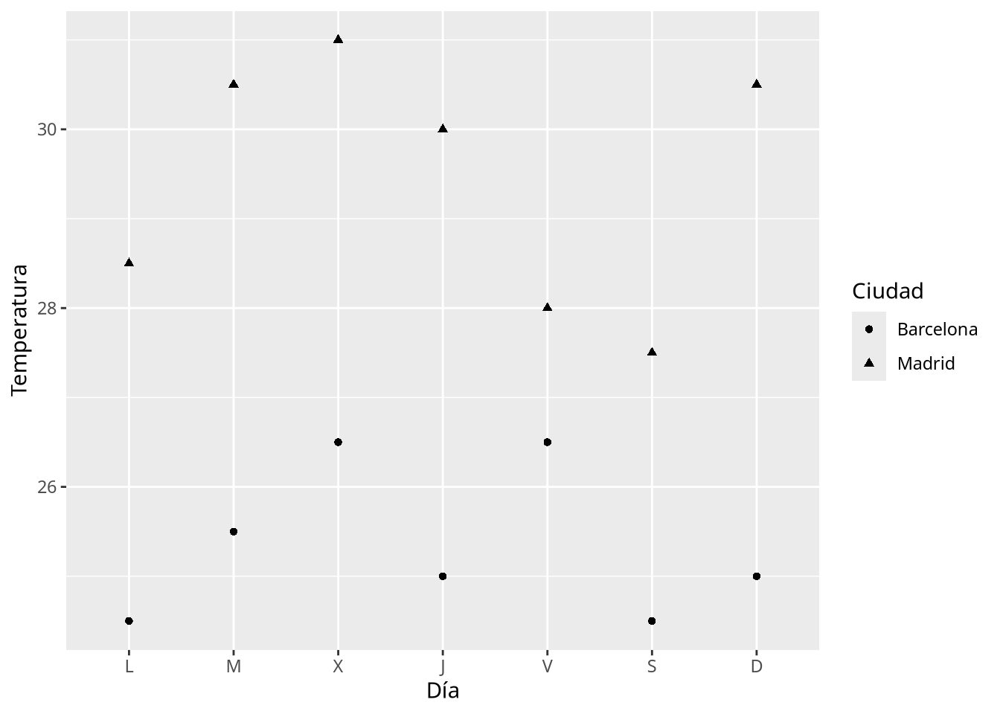
Ejemplo 7.3
# Inicializar el gráfico con el día en el atributo x, la temperatura en el atributo y, y la ciudad en el atributo colour.
ggplot(df, aes(x = Día, y = Temperatura, colour = Ciudad)) +
# Añadir la capa de los puntos.
geom_point()Ejemplo 7.4
library(ggplot2)
df <- read.csv('https://raw.githubusercontent.com/asalber/manual-r/master/datos/colesterol.csv')
# Inicializar el gráfico con la altura en el atributo x y el peso en el atributo y.
ggplot(df, aes(x = altura, y = peso)) +
# Añadir la capa de los puntos.
geom_point()Warning: Removed 1 row containing missing values or values outside the scale range
(`geom_point()`).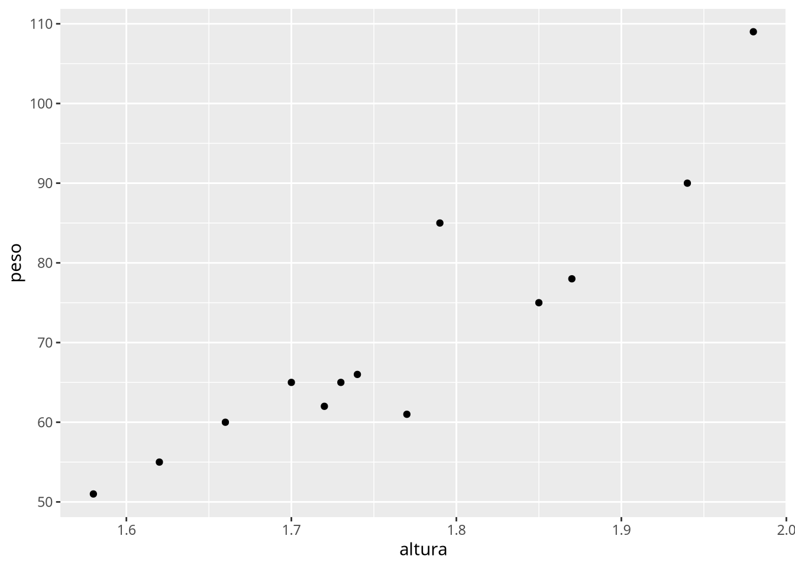
Ejemplo 7.5
# Inicializar el gráfico con la altura en el atributo x, el peso en el atributo y, y el sexo en el atributo colour.
ggplot(df, aes(x = altura, y = peso, colour = sexo)) +
# Añadir la capa de los puntos.
geom_point()Warning: Removed 1 row containing missing values or values outside the scale range
(`geom_point()`).7.4 Diagramas de líneas
Para dibujar un diagrama de líneas se utiliza la capa de objetos geométricos
geom_line(): Dibuja un diagrama de líneas que unen los puntos con coordenadas dadas por los pares de valores de las variables asociadas a los atributosxey. Cuando la variable asociada al atributoxes un factor, debe asociarse también una variable al atributogrouppara determina los grupos que se unirán mediante líneas. Si solo hay un grupo debe indicarsegroup = 1.
Esta capa es ideal para representar series temporales.
Ejemplo 7.6
library(dplyr)
library(ggplot2)
df <- read.csv('https://raw.githubusercontent.com/asalber/manual-r/master/datos/temperaturas.csv') %>%
mutate(Día = factor(Día, levels = c("L", "M", "X", "J", "V", "S", "D")))
# Filtrar los datos de Madrid
df.madrid = filter(df, Ciudad == "Madrid")
# Inicializar el gráfico con el día en el atributo x y la temperatura en el atributo y.
ggplot(df.madrid, aes(x = Día, y = Temperatura, group = 1)) +
# Añadir la capa de las lineas.
geom_line()Ejemplo 7.7
# Inicializar el gráfico con el día en el atributo x, la temperatura en el atributo y, y la ciudad en los atributos group y linetype.
ggplot(df, aes(x = Día, y = Temperatura, group = Ciudad, linetype = Ciudad)) +
# Añadir la capa de las lineas.
geom_line()Ejemplo 7.8
# Inicializar el gráfico con el día en el atributo x, la temperatura en el atributo y, y la ciudad en los atributos group y colour.
ggplot(df, aes(x = Día, y = Temperatura, group = Ciudad, colour = Ciudad)) +
# Añadir la capa de las lineas.
geom_line()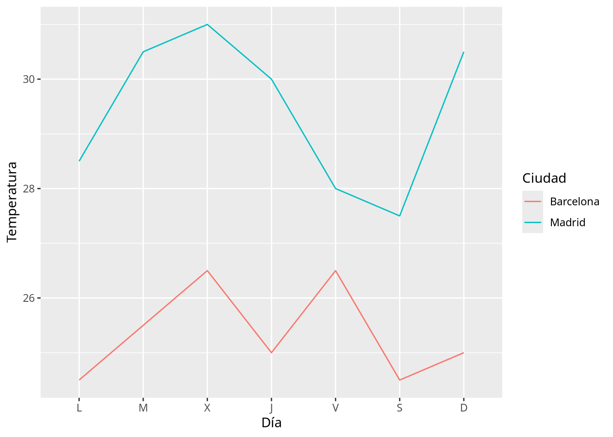
7.5 Diagramas de barras
Para dibujar un diagrama de barras se utiliza la capa de objetos geométricos
geom_bar(aes(weight = var)): Dibuja un diagrama de barras con la variable asociada al atributoxoy(si se usa el atributoxlas barras son verticales y se usayhorizontales), donde la altura de las barras viene dada por la variablevar. Si no se indica Por defecto, la altura de las barras representa la frecuencia absoluta de cada valor de la variable. Si no se indica el atributoweightla altura de las barras es la frecuencia absoluta de los valores de la variable asociada a los atributosxoy.
Ejemplo 7.9
library(dplyr)
library(ggplot2)
df <- read.csv('https://raw.githubusercontent.com/asalber/manual-r/master/datos/temperaturas.csv') %>%
mutate(Día = factor(Día, levels = c("L", "M", "X", "J", "V", "S", "D")))
df Ciudad Día Temperatura
1 Madrid L 28.5
2 Madrid M 30.5
3 Madrid X 31.0
4 Madrid J 30.0
5 Madrid V 28.0
6 Madrid S 27.5
7 Madrid D 30.5
8 Barcelona L 24.5
9 Barcelona M 25.5
10 Barcelona X 26.5
11 Barcelona J 25.0
12 Barcelona V 26.5
13 Barcelona S 24.5
14 Barcelona D 25.0# Filtrar los datos de Madrid
df.madrid = filter(df, Ciudad == "Madrid")
# Inicializar el gráfico con el día en el atributo x.
ggplot(df.madrid, aes(x = Día)) +
# Añadir la capa de las barras con altura la temperatura.
geom_bar(aes(weight = Temperatura))Ejemplo 7.10
# Inicializar el gráfico con el día en el atributo y.
ggplot(df.madrid, aes(y = Día)) +
# Añadir la capa de las barras con altura la temperatura.
geom_bar(aes(weight = Temperatura))Ejemplo 7.11
# Inicializar el gráfico con el día en el atributo x y la ciudad en el color de relleno.
ggplot(df, aes(x = Día, fill = Ciudad)) +
# Añadir la capa de las barras con altura la temperatura (por defecto barras acumuladas).
geom_bar(aes(weight = Temperatura))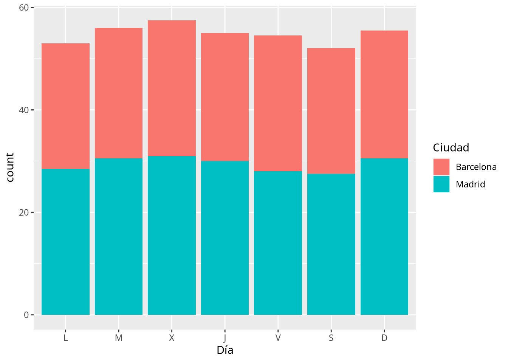
Ejemplo 7.12
# Inicializar el gráfico con el día en el atributo x y la ciudad en el color de relleno.
ggplot(df, aes(x = Día, fill = Ciudad)) +
# Añadir la capa de las barras con altura la temperatura indicando barras separadas.
geom_bar(aes(weight = Temperatura), position = "dodge")Ejemplo 7.13
library(ggplot2)
df <- read.csv('https://raw.githubusercontent.com/asalber/manual-r/master/datos/colesterol.csv')
# Inicializar el gráfico con el sexo en el atributo x.
ggplot(df, aes(x = sexo)) +
# Añadir la capa de las barras.
geom_bar()
Ejemplo 7.14
# Inicializar el gráfico con el sexo en los atributos x y fill.
ggplot(df, aes(x = sexo, fill = sexo)) +
# Añadir la capa de las barras.
geom_bar() Ejemplo 7.15
# Inicializar el gráfico con el sexo en los atributos x y fill.
ggplot(df, aes(x = sexo, fill = sexo)) +
# Añadir la capa de las barras con frecuencias relativas.
geom_bar(aes(y = after_stat(count / sum(count) * 100))) +
# Cambiamos la etiqueta del eje y
labs(y = "Porcentaje (%)")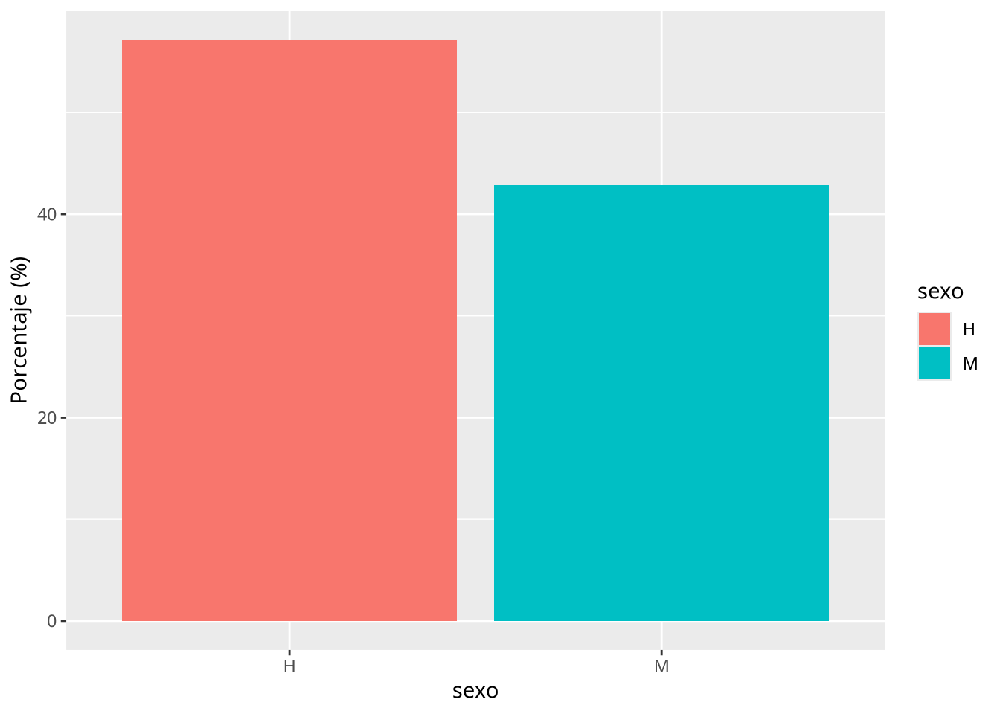
7.6 Histogramas
Para dibujar un histograma se utiliza la capa de objetos geométricos
geom_histogram(bins = clases, binwidth = anchura): Dibuja un histograma de la variable asociada al atributoxusando el número de clases indicado porclaseso bien clases de amplitud indicada poranchura. Si no se indica el parámetrobinsobindwidthse toman 30 clases por defecto.
Ejemplo 7.16
library(ggplot2)
df <- read.csv('https://raw.githubusercontent.com/asalber/manual-r/master/datos/colesterol.csv')
# Inicializar el gráfico con la edad en el atributo x.
ggplot(df, aes(x = altura)) +
# Añadir la capa del histograma.
geom_histogram()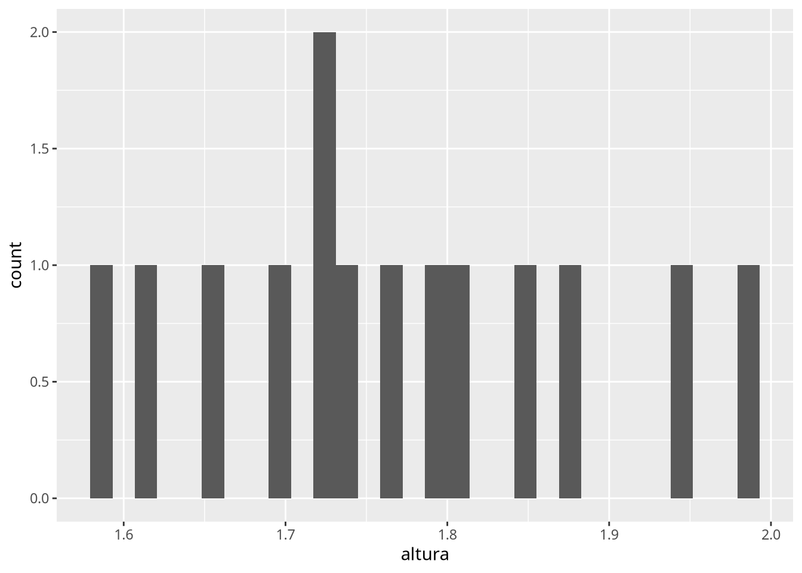
Ejemplo 7.17
# Inicializar el gráfico con la edad en el atributo x.
ggplot(df, aes(x = altura)) +
# Añadir la capa del histograma con anchura de clases 5.
geom_histogram(binwidth = 0.1)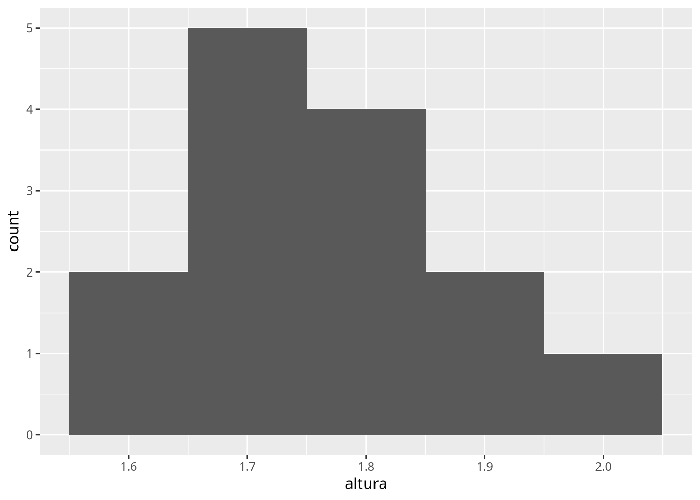
Ejemplo 7.18
# Inicializar el gráfico con la edad en el atributo x y el sexo en el atributo fill.
ggplot(df, aes(x = altura, fill = sexo)) +
# Añadir la capa del histograma con anchura de clases 10.
geom_histogram(binwidth = 0.1)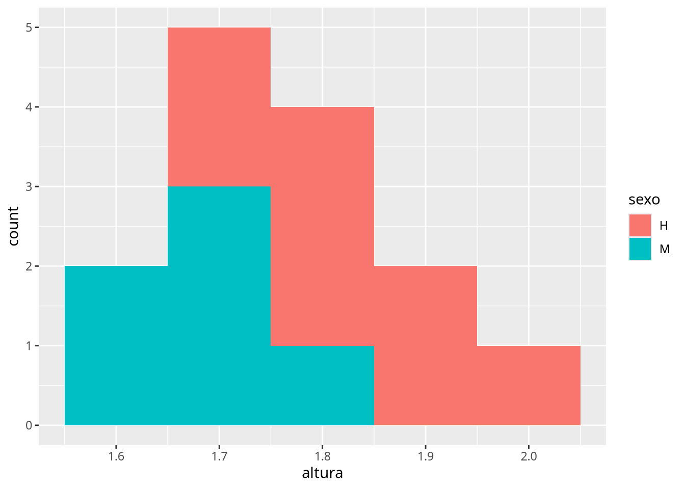
Ejemplo 7.19
# Inicializar el gráfico con la edad en el atributo x y el sexo en el atributo fill.
ggplot(df, aes(x = altura, fill = sexo)) +
# Añadir la capa del histograma con anchura de clases 10.
geom_histogram(binwidth = 0.1,alpha=0.4, position="identity")7.7 Diagramas de densidad
Para dibujar un diagrama de densidad se utiliza la capa de objetos geométricos
geom_density(): Dibuja un diagrama de densidad de probabilidad estimada de los valores de la variable asociada al atributox.
Este diagrama es una alternativa a los histogramas para representar la distribución de probabilidad de los valores de una variable.
Ejemplo 7.20
library(ggplot2)
df <- read.csv('https://raw.githubusercontent.com/asalber/manual-r/master/datos/colesterol.csv')
# Inicializar el gráfico con la edad en el atributo x.
ggplot(df, aes(x = edad)) +
# Añadir la capa de la densidad de probabilidad.
geom_density()Ejemplo 7.21
# Inicializar el gráfico con la edad en el atributo x y el sexo en el atributo colour.
ggplot(df, aes(x = edad, colour = sexo)) +
# Añadir la capa de la densidad de probabilidad.
geom_density()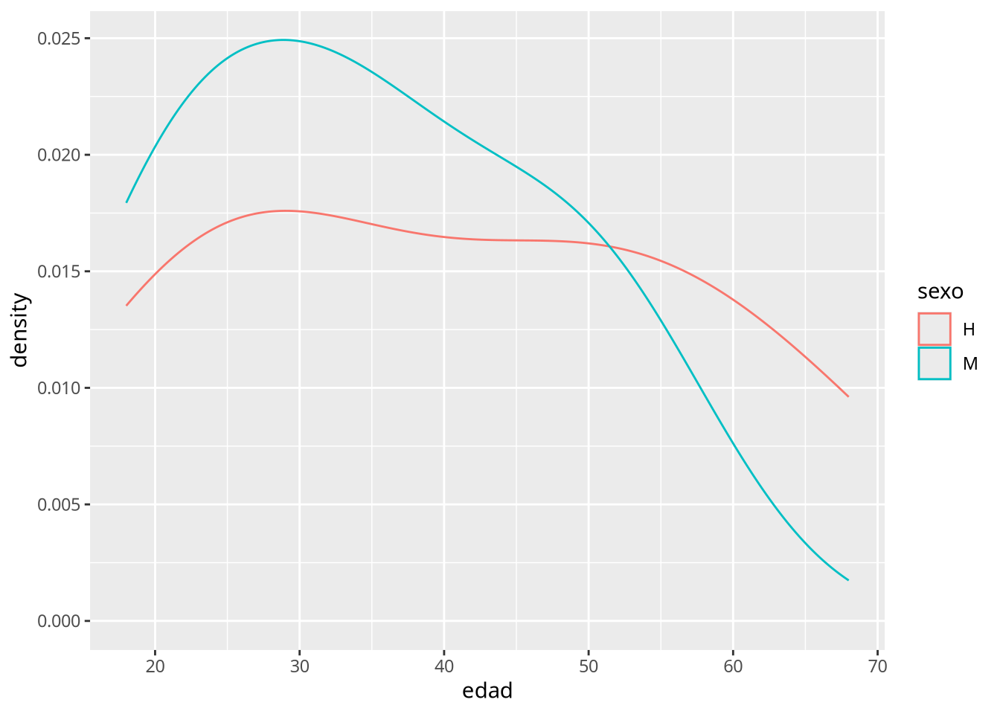
7.8 Diagramas de cajas
Para dibujar un diagrama de caja y bigotes se utiliza la capa de objetos geométricos
geom_boxplot(): Dibuja un diagrama de caja y bigotes de la variable asociada al atributoxoy. Si se utiliza el atributoxla caja se representa horizontalmente, y si se utiliza el atributoyverticalmente.
Ejemplo 7.22
library(ggplot2)
df <- read.csv('https://raw.githubusercontent.com/asalber/manual-r/master/datos/colesterol.csv')
# Inicializar el gráfico con el colesterol en el atributo x.
ggplot(df, aes(x = colesterol)) +
# Añadir la capa de la caja.
geom_boxplot()Warning: Removed 1 row containing non-finite outside the scale range
(`stat_boxplot()`).Ejemplo 7.23
# Inicializar el gráfico con la altura en el atributo y y el sexo en el atributo fill.
ggplot(df, aes(y = altura, fill = sexo)) +
# Añadir la capa de la caja.
geom_boxplot()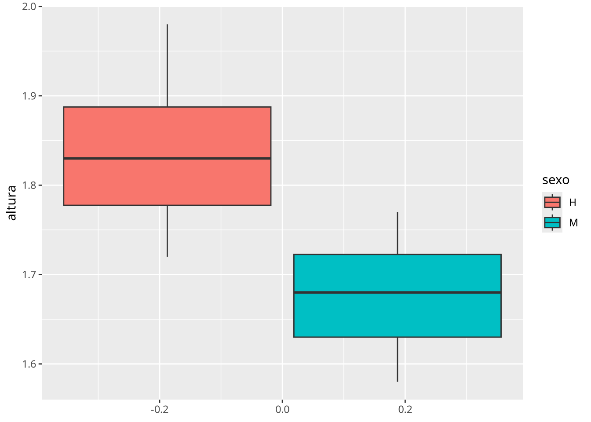
7.9 Diagrama de sectores
Para dibujar un diagrama de sectores se utiliza la misma capa de objetos geométricos que para los diagramas de barras (geom_bar) pero añadiendo el sistema de coordenadas polares.
coor_polar(theta = "x"|"y"): Cambia al sistema de coordenadas cartesianas polares, donde el ángulo viene dado por la variable asociada al atributo “x” o el atributo “y”.
Ejemplo 7.24
library(ggplot2)
df <- read.csv('https://raw.githubusercontent.com/asalber/manual-r/master/datos/colesterol.csv')
# Inicializar el gráfico con el sexo en el atributo x.
ggplot(df, aes(x = "", fill = sexo)) +
# Añadir la capa de las barras.
geom_bar() +
# Añadir el sistema de coordenadas polares
coord_polar(theta = "y")7.10 Interpolación y ajustes de regresión
Para dibujar una línea de interpolación o de ajuste de regresión se utiliza la capa de objetos geométricos
geom_smooth(method = ajuste, formula = ecuación): Dibuja una línea de ajuste para los puntos con coordenadas dadas por los pares de valores de las variables asociadas a los atributosxey, usando el método de ajuste dado por porajustey la fórmula dada porecuación. Los métodos de ajuste más habituales son:"loess": Ajuste de regresión polinomial local. Es la que se utiliza por defecto."lm": Ajuste de regresión de modelos lineal por mínimos cuadrados."glm": Ajuste de regresión modelos lineales generalizados por mínimos cuadrados. Por defecto se dibujan también las bandas con el error estándar del ajuste. Para desactivar estas bandas se debe indicar también el parámetrose = FALSE.
Esta capa suele usarse en combinación con la capa de puntos para diagramas de dispersión.
Ejemplo 7.25
library(ggplot2)
df <- read.csv('https://raw.githubusercontent.com/asalber/manual-r/master/datos/colesterol.csv')
# Inicializar el gráfico con la altura en el atributo x y el peso en el atributo y.
ggplot(df, aes(x = altura, y = peso)) +
# Añadir la capa de puntos.
geom_point() +
# Añadir la capa de ajuste de regresión polinomial local loess
geom_smooth()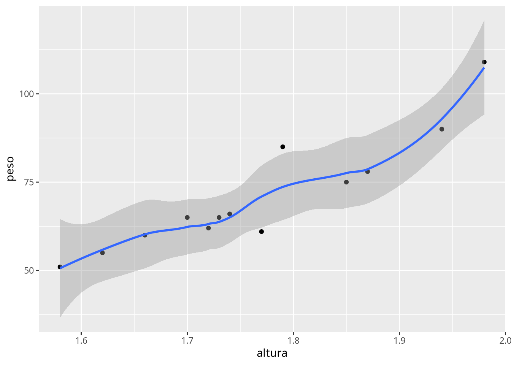
Ejemplo 7.26
# Inicializar el gráfico con la altura en el atributo x y el peso en el atributo y.
ggplot(df, aes(x = altura, y = peso)) +
# Añadir la capa de puntos.
geom_point() +
# Añadir la capa de ajuste de regresión lineal por mínimos cuadrados.
geom_smooth(method = "lm")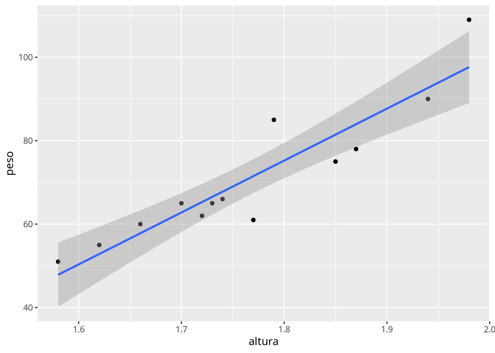
Ejemplo 7.27
# Inicializar el gráfico con la altura en el atributo x, el peso en el atributo y, y el sexo en el atributo colour.
ggplot(df, aes(x = altura, y = peso, colour = sexo)) +
# Añadir la capa de puntos.
geom_point() +
# Añadir la capa de ajuste de regresión lineal por mínimos cuadrados sin las bandas de error.
geom_smooth(method = "lm", se = FALSE)7.11 Facetas
Las facetas permiten desagregar un gráfico según los grupos de uno o varios factores del conjunto de datos. Para añadir facetas a un gráfico se añade la función
facet_wrap(vars(var1, var2,...), nrow = n, ncol = m): Crea un un gráfico para cada combinación de valores de las variablesvar1,var2, etc. y los coloca en una tabla denfilas ymcolumnas.
Ejemplo 7.28
library(ggplot2)
df <- read.csv('https://raw.githubusercontent.com/asalber/manual-r/master/datos/colesterol.csv')
# Inicializar el gráfico con la altura en el atributo x y el peso en el atributo y.
ggplot(df, aes(x = altura, y = peso)) +
# Añadir la capa de puntos
geom_point() +
# Añadir la capa de ajuste de regresión lineal por mínimos cuadrados.
geom_smooth(method = "lm") +
# Añadir la faceta del sexo.
facet_wrap(vars(sexo))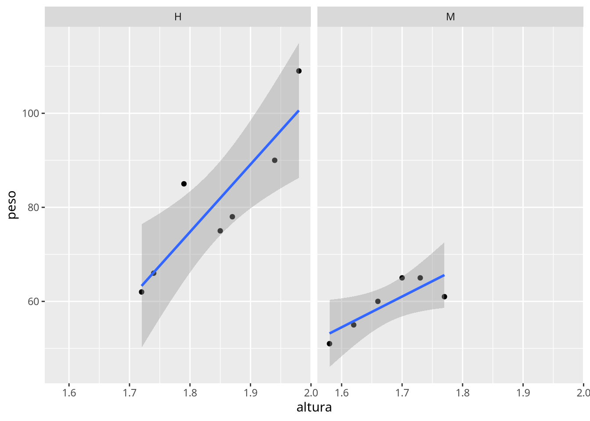
7.12 Personalización de gráficos
ggplot incluye multitud de posibilidades de personalización de gráficos. Aquí veremos solo las más habituales.
7.12.1 Títulos
Para poner un título al gráfico, a los ejes o a la leyenda se añade la función
labs(title = título, x = titulo-x, y = titulo-y,
colour = leyenda-color, shape = leyenda-forma)
Ejemplo 7.29
library(ggplot2)
df <- read.csv('https://raw.githubusercontent.com/asalber/manual-r/master/datos/colesterol.csv')
# Inicializar el gráfico con la altura en el atributo x y el peso en el atributo y.
ggplot(df, aes(x = altura, y = peso)) +
# Añadir la capa de puntos.
geom_point() +
# Añadir un título al gráfico y a los ejes.
labs(title = "Diagrama de dispersión", x = "Altura (m)", y = "Peso (kg)")7.12.2 Escalas
Para cambiar las escalas de los ejes cartesianos se añaden la funciones
scale_x_continuos(limits = rango, breaks = cortes, labels = etiquetas, trans = transformación): Restringe escala del eje x al rango indicado porrango, incluye las marcas en eje indicadas porcortescon las etiquetas indicadas poretiquetasy aplica la transformación de escala indicada portransformación. Las transformaciones de escala más habituales son"log2"(logarítmo en base 2),"log10"(logarítmo en base 10) ysqrt(raíz cuadrada).scale_y_continuos(limits = rango, breaks = cortes, labels = etiquetas, trans = transformación): Igual que la función anterior pero para el eje y.
Ejemplo 7.30
library(ggplot2)
df <- read.csv('https://raw.githubusercontent.com/asalber/manual-r/master/datos/colesterol.csv')
# Inicializar el gráfico con la altura en el atributo x y el peso en el atributo y.
ggplot(df, aes(x = altura, y = peso)) +
# Añadir la capa de los puntos.
geom_point() +
# Cambiar el rango y las marcas de la escala del eje x
scale_x_continuous(limits = c(1.5, 2.1), breaks = seq(1.5, 2.1, 0.1)) +
# Aplicar una transformación logarítmica a la la escala del eje y
scale_y_continuous(trans = "log2", breaks = seq(50, 110, 10))7.12.3 Temas
Finalmente se para cambiar otros aspectos del gráfico como las fuentes o los colores de fondos se utilizan temas. Para indicar o modificar un tema se añade la función
theme(propiedades): Modifica las propiedades del tema indicadas. La lista es demasiado grande para cubrirla en este tutorial, por lo que se recomienda ver todas las opciones en la documentación deggplot2.
Ejemplo 7.31
library(ggplot2)
df <- read.csv('https://raw.githubusercontent.com/asalber/manual-r/master/datos/colesterol.csv')
# Inicializar el gráfico con la altura en el atributo x y el peso en el atributo y.
ggplot(df, aes(x = altura, y = peso)) +
# Añadir la capa de puntos.
geom_point() +
# Añadir un título al gráfico.
labs(title = "Diagrama de dispersión") +
# Cambiar el tamaño y el color de la fuente del título.
theme(plot.title = element_text(size = 20, colour = "blue"))Ejemplo 7.32
# Inicializar el gráfico con la altura en el atributo x, el peso en el atributo y, y el sexo al atributo colour.
ggplot(df, aes(x = altura, y = peso, colour = sexo)) +
# Añadir la capa de puntos.
geom_point() +
# Cambiar el la posición de la leyenda
theme(legend.position = "top")ggplot2 incorpora los siguientes temas predefinidos:
- `theme_gray()`: Tema en escala de grises. Es el tema por defecto.
- `theme_bw()`: Tema en blanco y negro.
- `theme_light()`: Tema con las líneas de los ejes y de la rejilla delgadas y atenuadas para dar más protagonismo a los datos.
- `theme_dark()`: Similar al tema anterior pero con fondo oscuro.
- `theme_minimal()`: Tema sin fondo.
- `theme_classic()`: Tema sin rejilla.
- `theme_void()`: Tema vacío.Ejemplo 7.33
# Inicializar el gráfico con la altura en el atributo x, el peso en el atributo y, y el sexo al atributo colour.
ggplot(df, aes(x = altura, y = peso, colour = sexo)) +
# Añadir la capa de puntos.
geom_point() +
# Usar el tema sin rejilla
theme_classic()7.13 Ejercicios
Ejercicio 7.1 El fichero neonatos contiene información sobre los recién nacidos en un hospital durante un año.
Crear un tibble con los datos del fichero.
Soluciónlibrary(tidyverse) df <- read_csv('https://raw.githubusercontent.com/asalber/manual-r/master/datos/neonatos.csv') df# A tibble: 320 × 8 peso sexo edad tabaco cigarros tabaco.antes apgar1 apgar5 <dbl> <chr> <chr> <chr> <dbl> <chr> <dbl> <dbl> 1 3.28 hombre mayor de 20 No 0 No 7 7 2 3.49 hombre mayor de 20 No 0 No 7 8 3 2.88 hombre mayor de 20 No 0 Si 5 6 4 3.42 hombre mayor de 20 No 0 No 8 8 5 3.31 hombre mayor de 20 No 0 No 6 7 6 3.53 hombre mayor de 20 No 0 No 8 8 7 3.46 hombre mayor de 20 No 0 No 7 8 8 3.12 hombre mayor de 20 No 0 No 7 7 9 2.77 hombre mayor de 20 No 0 No 5 5 10 3.31 hombre mayor de 20 No 0 No 7 8 # ℹ 310 more rowsConvertir las variables
sexo,edad,tabacoytabaco.antesen factores.Solucióndf <- mutate(df, sexo = factor(sexo), edad = factor(edad), tabaco = factor(tabaco), tabaco.antes = factor(tabaco.antes))Dibujar un diagrama de barras con la frecuencia de niños y niñas.
Soluciónggplot(df, aes(x = sexo)) + geom_bar()Dibujar un diagrama de barras del
apgar1de los neonatos de madres fumadoras y no fumadoras durante el embarazo.Soluciónggplot(df, aes(x = apgar1, fill = tabaco)) + geom_bar(position = "dodge")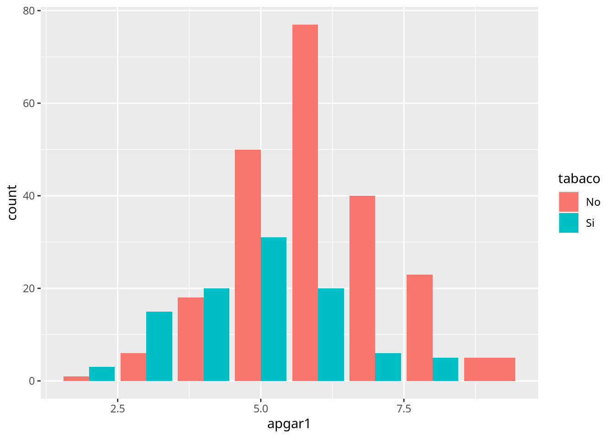
Dibujar un histograma acumulado del peso según el sexo con 10 clases.
Soluciónggplot(df, aes(x = peso, fill = sexo)) + geom_histogram(bins = 10)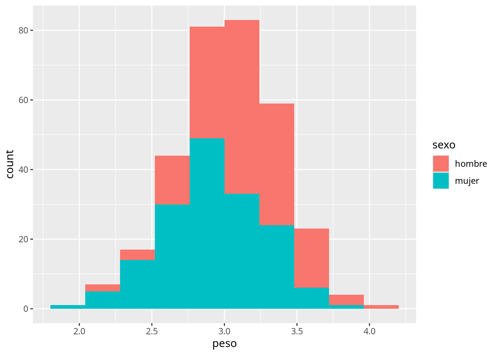
Dibujar un gráfico de densidad de probabilidad del peso de los neonatos de madres fumadoras y no fumadoras durante el embarazo.
Soluciónggplot(df, aes(x = peso, colour = tabaco)) + geom_density()Dibujar un diagrama de caja del peso de los recién nacidos según sexo y si la madre fumaba o no durante el embarazo.
Soluciónggplot(df, aes(x = sexo, y = peso, fill = tabaco)) + geom_boxplot()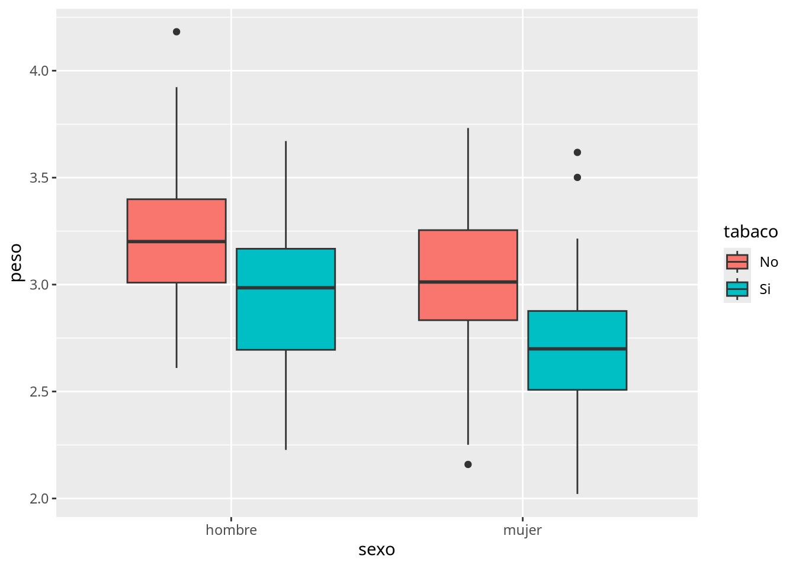
Dibujar un diagrama de dispersión del peso de los recién nacidos de madres fumadoras durante el embarazo, frente al número de cigarros que fumaban las madres. Incluir la recta de regresión.
Solucióndf %>% filter(tabaco == "Si") %>% ggplot(aes(x = cigarros, y = peso)) + geom_point() + geom_smooth(method = "lm")`geom_smooth()` using formula = 'y ~ x'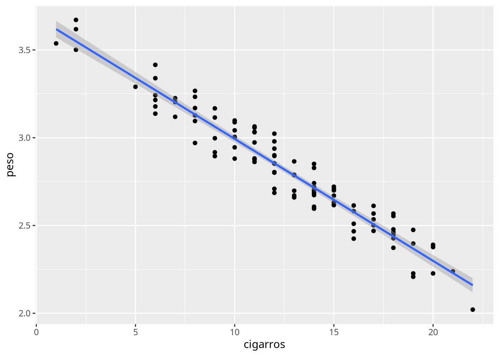
Dibujar un diagrama de dispersión del peso de los recién nacidos de madres fumadoras durante el embarazo, frente al número de cigarros que fumaban las madres, separando por facetas según el sexo y la edad de la madre.
Solucióndf %>% filter(tabaco == "Si") %>% ggplot(aes(x = cigarros, y = peso)) + geom_point() + geom_smooth(method = "lm") + facet_wrap(vars(sexo, edad))`geom_smooth()` using formula = 'y ~ x'